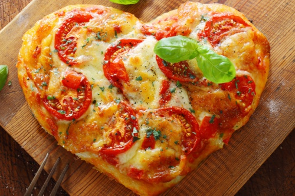
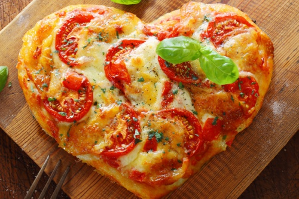

Eine Ode an die Pizza
Hier sehen sie das Beste was mir je passiert ist.
Es tut so gut, wenn man sie isst,
ich vergesse den Rest der Speisekarte,
wenn ich sie sehe.

Hier sehen sie das Beste was mir je passiert ist.
Es tut so gut, wenn man sie isst,
ich vergesse den Rest der Speisekarte,
wenn ich sie sehe.
